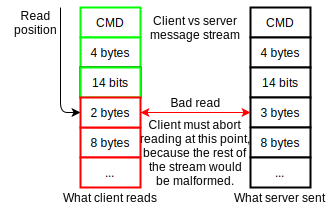
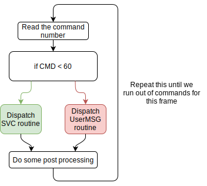

A SVC (SerVer Command) parsing system is a system used inside the GoldSource engine for one way communication between the server and the client. The code is responsible for dispatching several routines (messages) that the server can send to client at any moment during play time. Both sending and parsing messages must strictly follow a well defined protocol (also called protocol 48 in the newest version of the game) that both the server and the client must use in order to prevent message buffer read/write failures.
As said before, this communication allows a one way connection between server and client (the other way, i.e. client to server, would be CLC system - CLient Command). There are total of 61 messages that the server can send to the client and that the client can then dispatch/parse. Then there are also user messages that are sent from the server but we'll not discuss them here in detail. Each message (or a SVC from now on) has a number (or a command or a CMD from now on) associated to it.
When the server wants to send a specific command to the client, he prepares a new SVC message by writing the command number as a first byte of the actual message. After the command number, the actual data is written.
Each SVC has a variable amount of data to it. Some SVC's don't have any data associated to it, they just inform about some event/notification or something similiar. Others may contain huge payloads to transfer over the network.
A protocol could be defined as some kind of policy of how the data are both scheduled and parsed. The server and client must follow the same policy.
Older builds of the game may have older protocol schemes and thus users using these versions of the game cannot play on the newest version of the game, including 99% of the online servers. Some servers supports extensions such as dproto (Dual Protocol) which allows servers to support multiple protocols at once, allowing users with older game builds to join.
A bad read is a term often used within the networking code used to determine a bad read operation. When this happens, the whole data stream is malformed and the read operation must end immediately.
What happens if the server sends something that the client doesn't expect? Bad things. In general, a read failure would occur and that's a instant disconnect from the server. Knowing this, we must assure that on the client side we read the data in the exact same order as the server meant us to read it, otherwise a "bad read" could occur.
On client side, every message is parsed inside function CL_ParseServerMessage(). The function is composed out of main loop and some other glue code around which we'll not discuss in here. The main loop is responsible to run until it runs out of messages to parse. It carefully goes through all the commands that server sent and dispatches them accordingly.
There are two types of commands that will be dispatched/parsed. A SVC command and a UserMSG command. A SVC command is targeted for engine code, meaning that it is being dispatched inside the engine. The another one, UserMSG command is being handled inside the client dll. Client dlls uses this form of communication. They are dispatched as following.
There are 57 SVC messages with valid parsing routines. Others are considered as invalid or unused (or UseMSGs). When the message is being parsed, it means that particular parsing routine for specific command is being dispatched. This parsing routine may or may not contain the functions that allow to read the data from the server. One of such function is for example MSG_ReadByte().
// A list of SVC parsing routines - cl_parsefuncs[]
// The first is the SVC name, then the parsing/dispatch
// routine and then the command number.
"svc_bad" -> nullptr // 0
"svc_nop" -> nullptr // 1
"svc_disconnect" -> CL_Parse_Disconnect // 2
"svc_event" -> CL_ParseEvent // 3
"svc_version" -> CL_Parse_Version // 4
"svc_setview" -> CL_Parse_SetView // 5
"svc_sound" -> CL_Parse_Sound // 6
"svc_time" -> CL_Parse_Time // 7
"svc_print" -> CL_Parse_Print // 8
"svc_stufftext" -> CL_Parse_StuffText // 9
"svc_setangle" -> CL_Parse_SetAngle // 10
"svc_serverinfo" -> CL_Parse_ServerInfo // 11
"svc_lightstyle" -> CL_Parse_LightStyle // 12
"svc_updateuserinfo" -> CL_Parse_UpdateUserInfo // 13
"svc_deltadescription" -> CL_Parse_DeltaDescription // 14
"svc_clientdata" -> CL_Parse_ClientData // 15
"svc_stopsound" -> CL_Parse_StopSound // 16
"svc_pings" -> CL_Parse_Pings // 17
"svc_particle" -> CL_Parse_Particle // 18
"svc_damage" -> CL_Parse_Damage // 19
"svc_spawnstatic" -> CL_Parse_SpawnStatic // 20
"svc_event_reliable" -> CL_Parse_ReliableEvent // 21
"svc_spawnbaseline" -> CL_Parse_SpawnBaseline // 22
"svc_temp_entity" -> CL_Parse_TempEntity // 23
"svc_setpause" -> CL_Parse_SetPause // 24
"svc_signonnum" -> CL_Parse_SignonNum // 25
"svc_centerprint" -> CL_Parse_CenterPrint // 26
"svc_killedmonster" -> CL_Parse_KilledMonster // 27
"svc_foundsecret" -> CL_Parse_FoundSecret // 28
"svc_spawnstaticsound" -> CL_Parse_SpawnStaticSound // 29
"svc_intermission" -> CL_Parse_Intermission // 30
"svc_finale" -> CL_Parse_Finale // 31
"svc_cdtrack" -> CL_Parse_CDTrack // 32
"svc_restore" -> CL_Parse_Restore // 33
"svc_cutscene" -> CL_Parse_CutScene // 34
"svc_weaponanim" -> CL_Parse_WeaponAnim // 35
"svc_decalname" -> CL_Parse_DecalName // 36
"svc_roomtype" -> CL_Parse_RoomType // 37
"svc_addangle" -> CL_Parse_AddAngle // 38
"svc_newusermsg" -> CL_Parse_NewUserMsg // 39
"svc_packetentities" -> CL_Parse_PacketEntities // 40
"svc_deltapacketentities" -> CL_Parse_DeltaPacketEntities // 41
"svc_choke" -> CL_Parse_Choke // 42
"svc_resourcelist" -> CL_Parse_ResourceList // 43
"svc_newmovevars" -> CL_Parse_NewMoveVars // 44
"svc_resourcerequest" -> CL_Parse_ResourceRequest // 45
"svc_customization" -> CL_Parse_Customization // 46
"svc_crosshairangle" -> CL_Parse_CrosshairAngle // 47
"svc_soundfade" -> CL_Parse_SoundFade // 48
"svc_filetxferfailed" -> CL_ParseFileTxferFailed // 49
"svc_hltv" -> CL_Parse_HLTV // 50
"svc_director" -> CL_Parse_Director // 51
"svc_voiceinit" -> CL_Parse_VoiceInit // 52
"svc_voicedata" -> CL_Parse_VoiceData // 53
"svc_sendextrainfo" -> CL_Set_ServerExtraInfo // 54
"svc_timescale" -> CL_Parse_Timescale // 55
"svc_resourcelocation" -> CL_Parse_ResourceLocation // 56
"svc_sendcvarvalue" -> CL_Send_CvarValue // 57
"svc_sendcvarvalue2" -> CL_Send_CvarValue2 // 58
"svc_exec" -> CL_Exec // 59
"End of List" -> nullptr // 255
Some parsing routines can be as simple as one line of code only. However some of them are far more complex. The best example of a single routine could be CL_Parse_Print() which only displays text in the console from the server.
// Is called when the server issues command #8 (svc_print)
void CL_Parse_Print()
{
// Displays string that the sever sent to us
// inside the console.
Con_Printf("%s", MSG_ReadString());
}
On the other hand, CL_Parse_PacketEntities() contains some really complex logic and it's composed out of nearly 350 lines of solid code.
These routines are responsible for reading from the buffer that the server sent us. The buffer that the server wrote to is just a continuous block of data that is composed out of several SVC and UserMSG messages. In order to read the data after the command number, we need a rich set of function that are capable of reading bits, bytes, integers, floats, strings or buffers of custom size. Such functions are stored inside common.c source file.
int MSG_ReadByte(void)
{
int c; // The value that will be read
// Check for bad read
if (msg_readcount < net_message.cursize)
{
// Read the value out of the global data buffer
c = net_message.data[msg_readcount];
msg_readcount++;
}
else
{
// This read resulted in a bad read, we have to abort
msg_badread = 1;
c = -1;
}
return c;
}
Why does the function returns an integer instead of byte is questionable, however this is original design and keeping it the same way is eligible in order to not cause any hard-fixable bugs. As we can see, the function checks for a bad read and it reads the byte value out of the global buffer that the server sent to us. This is all to it. After the value is read, a global counter msg_readcount is incremented, in order to inform at which position we're while reading.
Similiar implementations are for reading other types, however the core remains the same - all of them are utilizing the main net_message buffer.
This system of one-way communication between server and client is nowadays deprecated, hard to debug, and hard to manage. Probably the biggest issue is when a bug is created (a bad read or a bad write from the server side), the entire system collapses and is unable to continue. This requires rich tool set of debugging tools in order to eligibly determine where is the bug origin. Without the debugging tools, finding such bug would be really painful and frustrating to say the least.
In other words, in such system, everything has to be 100% balanced without any bug and very well bugtested and this makes it not so much comprehensive to todays standards.